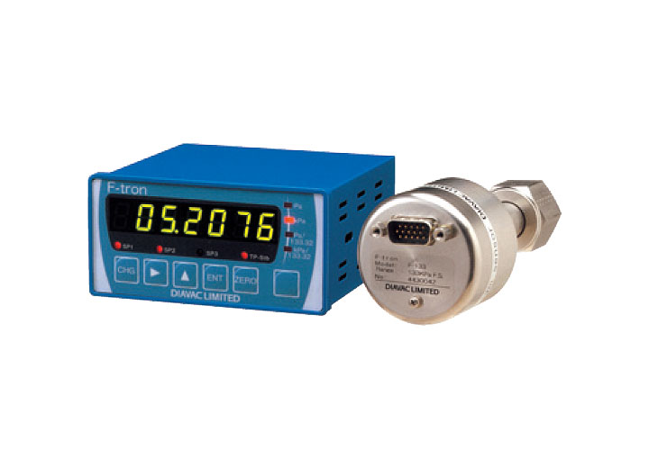
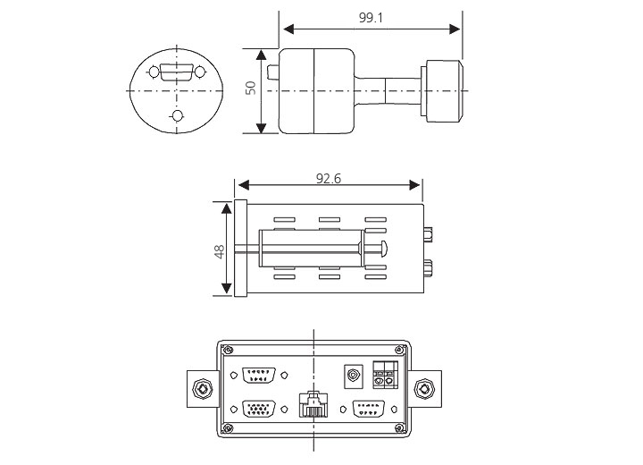

| Full-Scale range | 133kPa |
| Display resolving power | 1ppm @ F.S. |
| Precision | 0.1% R (at 23℃) |
| Zero temperature Coefficient | between 10 to 50℃ of service temperature |
| Temperature Coefficient span | between 10 to 50℃；of sew ice temperature |
| Data-renewalrate | 2.2 msec MAX |
| Digital Communication | 4-line system, all dual ch. |
| Output signal | DC0V- 10V |
| Set point output | 3-points, photo-coupler; 30VDCt 0.2 A or Iess |
| hput power | non-heating type- +24 VDC 0+2 A MAX |
| Ambient temperature | at operation： 10 to 50"C at Storage:-10 to 70℃ |
| Material used in vacuum part | Silicon, SiO2. SUS3O4, Viton |